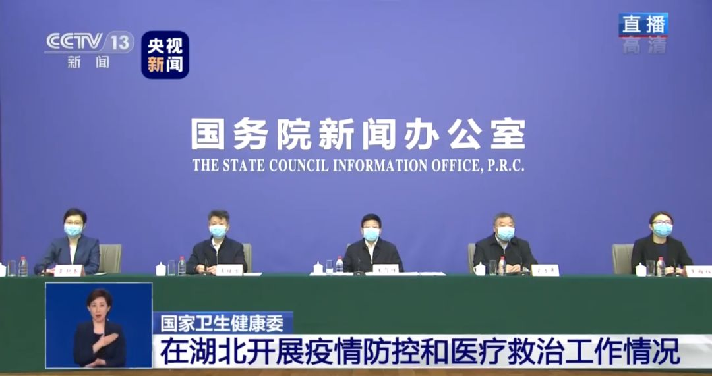
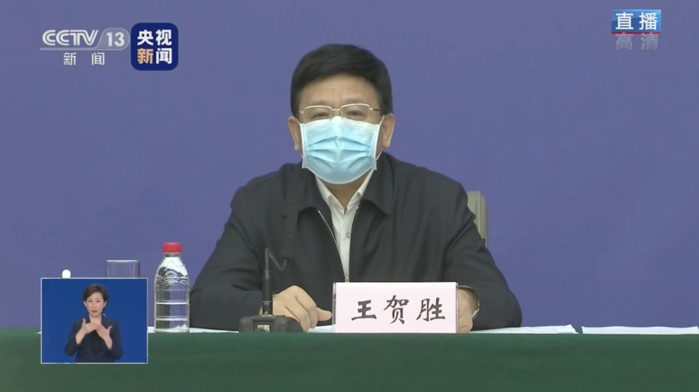
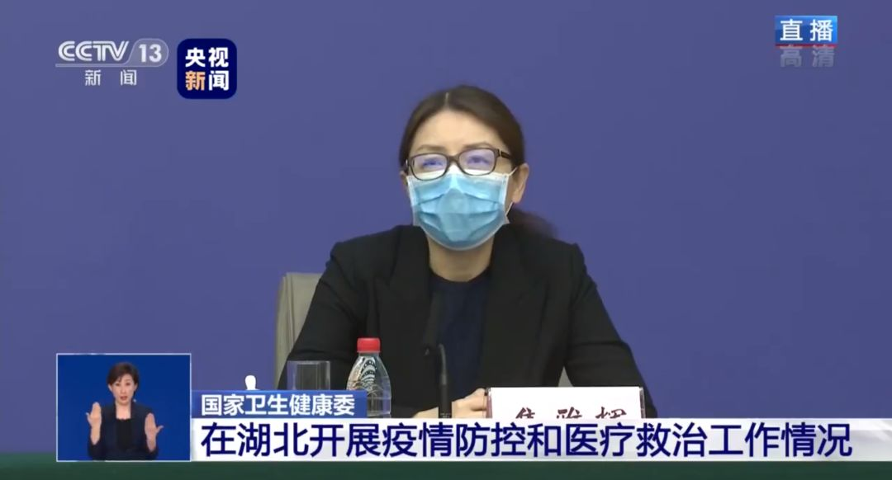

千人医疗队驰援武汉，诊治难度并无想象中可怕，未来最大挑战来自武汉之外
原文链接 备份链接 支援武汉的医护人员已上千，地方900多人，军队450人，随后将再派1600多人。 武汉医护人员身心俱疲，难以应对不断增长的病例和民众的恐慌。 外援的到来，缓解了他们的负担。不少援汉医护人员感到，仅从肺炎诊治难度而 …

2月15日上午，国务院新闻办公室在湖北武汉举行新闻发布会，请国家卫生健康委党组成员、副主任，湖北省委常委王贺胜等介绍在湖北组织开展疫情防控和医疗救治工作情况，并答记者问。

 此次调动医疗救援规模速度超汶川地震
此次调动医疗救援规模速度超汶川地震
王贺胜介绍，截至2月14日14时，各地共派出了217支医疗队，25633名医疗队员（不含军队派出的医疗队和队员），还调集了三个移动的P3实验室。其中在武汉市有181支医疗队，20374名医疗队员，在其他城市有36支医疗队，5259名医疗队员，这些都大大超过了2008年汶川特大地震医疗救援的调动规模速度。

已开放9个方舱医院，6960多张床位
王贺胜介绍，目前，已经开放了9个方舱医院，有6960多张床位，在院患者达到了5606名。下一步根据需要，我们要继续腾空医院部分的病房，征用部分场馆，改造为定点医院和方舱医院，确保已排查确诊的患者和疑似患者都能够得到集中收治，确保所有没有收治的患者人数清零。
湖北过半确诊病例采取中医药治疗
在答问环节，王贺胜表示，中西医结合救治患者是此次疫情救治的一大特色。

记者远程提问
他透露，目前已经派出了3支国家中医医疗队，并且组织全国的中医药系统共同向湖北派出医疗队员，达到2220人。
中医医疗队坚持中西医结合，突出中医药的特色，湖北省一半以上的确诊病例都使用了中医药治疗。中医药还积极参与了社区防控，为有需求的群众发放中药。
“我们通过统筹中西医的资源，协同攻关、优势互补，努力提高治愈率，最大程度降低病死率，切实维护人民群众的生命安全和身体健康。”王贺胜说。
湖北防控工作到了最吃紧的时候
国家卫健委疫情应对处置工作专家组组长梁万年表示，除湖北外，全国其它省份新增确诊病例数从2月3日起的800多例下降到2月13日的300例以下。其中8个地区新增确诊病例人数连续3天小于5例，这是一个比较好的迹象。但武汉市每日新增确诊病例数仍处于较高水平，但2月1日以后处于下降趋势。湖北省其他地市中，有的地市发病水平依然高，如孝感、黄冈等。湖北防控工作到了最吃紧的时候，也是一种焦灼对垒的状态，要毫不放松地把疫情防控工作作为重中之重。

武汉市金银潭医院和肺科医院患者出院率达30%-39%
国家卫健委医政医管局副局长焦雅辉介绍，以武汉市最早重症定点两家医院为例，金银潭医院和武汉肺科医院，他们现在患者的出院率已经达到了30%到39%，所以从这个数字来看，给我们带来了极大的信心。

来源：央视新闻


推荐阅读

点击大图 | 高情商！李佳琦复播求下“热搜”：电商直播悄然“复苏”

点击大图 |无人零售又“火”了

原文链接 备份链接 支援武汉的医护人员已上千，地方900多人，军队450人，随后将再派1600多人。 武汉医护人员身心俱疲，难以应对不断增长的病例和民众的恐慌。 外援的到来，缓解了他们的负担。不少援汉医护人员感到，仅从肺炎诊治难度而 …
原文链接 备份链接 【财新网】（记者 黄蕙昭）除夕夜的武汉医院并不平静：人们欢喜静待新一年到来之时，武汉一线的医疗队伍仍在坚守一场未竟的战争。繁忙的救护节奏未因节日有丝毫松缓：从早上七点起，医护人员就到岗穿戴防护用具，期间不喝水、不入 …
原文链接 备份链接 方舱医院患者出院还是比较快的，这样周转起来，就可以接收大量的病人，可以做到“应收尽收”。 文 | 黄 祺 13天前，武汉新冠肺炎疫情仿如“暗夜”——社区还有大量感染者未能得到诊断，他们如果得不到及时的治疗，病情很可能 …
原文链接 备份链接 伴随着火神山、雷神山医院开始收治病人，15家方舱医院陆续启动， 各省医疗队开赴武汉，武汉所有确诊患者与疑似病例都将“应收尽收”。 在人类抗击疫病的历史上，“武汉会战”已成为一场史无前例的超级行动 图/新华、中新 武汉 …
原文链接 备份链接 新冠疫情期间，居家隔离的疑似患者，和非新冠肺炎患者，都需要诊疗服务，但去医院有交叉感染风险。 于是在线问诊需求暴增。好大夫创始人王航估计，目前“线上每天能服务12万人”。 黑龙江、武汉、上海等地多家公立医院迅速开 …